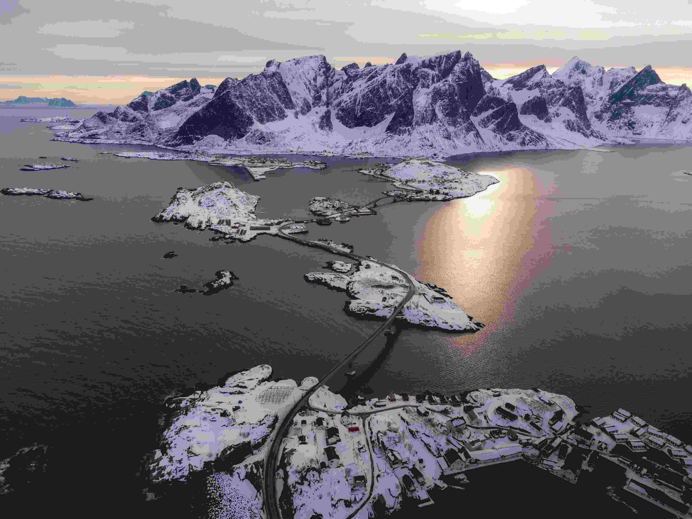
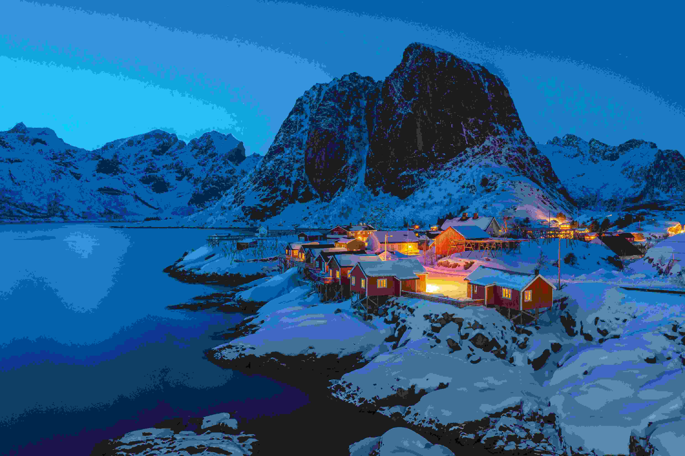
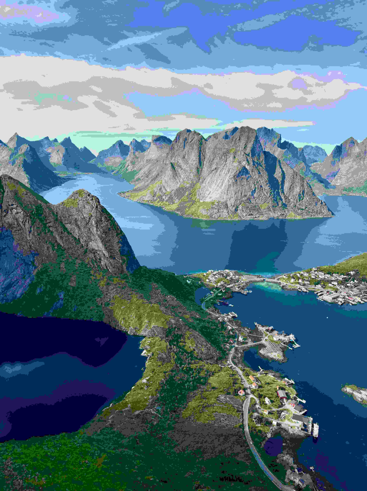
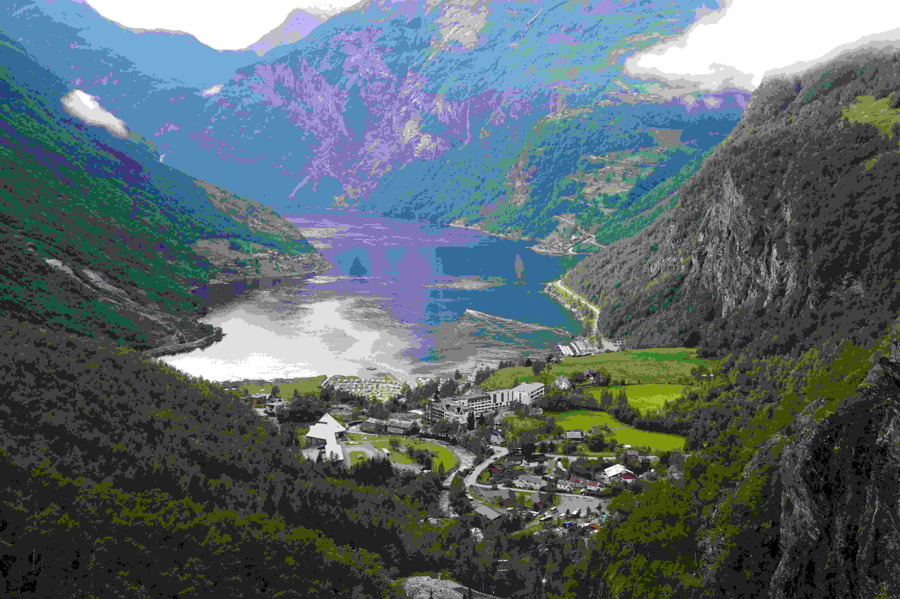

挪威蓋朗厄爾峽灣——世界遺產級海岸峽灣


蓋朗厄爾(Geirangerfjord)：山海的垂直史詩
蓋朗厄爾的源起，要追溯到二百五十萬年前的更新世。彼時挪威西部覆著厚達兩三公里的冰川，如天然冰刃沿山體緩移，硬生生將起伏山巒刻出U型深谷。約一萬年前氣候回暖，冰川退卻，海水倒灌入谷，遂成全長15公里、兩岸垂直落差最高1400米的峽灣，水下仍深延500米，「山海垂直相依」的地貌由此定型。 峽灣盡頭的蓋朗厄爾村僅住著兩百餘人，融雪自峭壁奔湧而下，才有了七姐妹、新娘面紗等瀑布——這部宏大的地質史，最終落成了幾簇飛濺的水痕。當最後一抹冰川融水匯入峽灣，這部宏大地質史的扉頁剛合，人類活動的墨跡便順著岩縫落了下來。 約公元前後的鐵器時代，第一批先民順著峽灣的走向遷徙至此——這片「山海垂直相依」的地貌，既提供了峽灣裡取之不竭的漁獲，陡峭山坡上稀疏卻肥美的草場，也足夠放牧山羊與綿羊；而全長15公里、最窄處不足500公尺的天然深水灣，更是躲避北海風浪的絕佳港埠，恰好滿足了早期聚落「靠海吃海、依山牧畜」的生存需求。 到了8世紀維京時代，蓋朗厄爾峽灣憑藉隱蔽狹長的地形，成了維京長船的重要據點。考古出土的船形石棺與刻有北歐符文的石碑，至今還留在峽灣中段的聖奧拉夫教堂遺址裡，見證著當年維京人揚帆遠航前的祭禱儀式。為了拓展生存空間，先民們沿著千米高的岩壁攀爬，在險峻的坡面上辟出懸崖農場，石砌的羊圈、歪斜的木柵欄，還有纏滿野玫瑰的籬笆，成了後來Skageflå、Knivsflå等農場遺跡的前身，也把人類活動的痕跡，牢牢刻進了峽灣的垂直肌理之中。 千百年來，漁舟的槳聲、牧羊人的吆喝、維京人的號子，都順著風飄落在七姐妹瀑布的水霧裡，讓這片原本只有冰與海的地質空間，慢慢有了煙火氣。
蓋朗厄爾村(Geiranger)

——來到挪威，看一看當地最美麗的峽灣:蓋朗厄爾峽灣(Geirangerfjord)，逛一逛這裏的蓋朗厄爾村（Geiranger）。
蓋朗厄爾村（Geiranger）是聯合國教科文組織世界自然遺產「西挪威峽灣」的核心聚落， 坐落於蓋朗厄爾峽灣（Geirangerfjord）最內側的盡頭，常住人口僅約200人， 是進入這片全球罕見「垂直峽灣」的唯一陸上落腳點，也是《國家地理》評選的「挪威必去TOP10」目的地。 游客可從奧勒松（Ålesund）自駕2.5小時抵達，或搭乘夏季限定的UNESCO峽灣巴士前往。
蓋朗厄爾村 Geiranger：峽灣盡頭的獨一份體驗
蓋朗厄爾峽灣全長約15公里，水深最處達260公尺，兩岸山峰聳立至海拔1600–1700公尺——這樣極致的「山海垂直地貌」，在地球上幾乎無處可尋。而蓋朗厄爾村， 剛好坐落在這幅山海史詩的畫框正中：走出村口，正面是翡翠色的峽灣水面；抬頭往北岸看，就是挪威最著名的自然地標「七姐妹瀑布」。 村子的珍貴之處在於：它既是一個活著的北歐村落，也是進入峽灣奇觀的天然基地。這裡有1842年建成的蓋朗厄爾峽灣教堂，原木結構靜謐古樸； 有提供互動裝置與3D投影的挪威峽灣中心（Norwegian Fjord Centre），系統講述這片土地的地質史、維京人居留史與世界遺產價值， 是探索峽灣前最佳的知識起點。
蓋朗厄爾村(Geiranger)：世界遺產峽灣的童話口岸
蓋朗厄爾村（Geiranger）位於峽灣最內陸的頂端，常住人口僅約兩百餘人。村子被群山環抱，只有一條長約 1000 公尺的盤山公路對外連接，夏季徒步而來的遊客絡繹不絕。
1.🚢 峽灣遊船｜水上近距離觀瀑
從蓋朗厄爾村（Geiranger）碼頭登船，是公認欣賞蓋朗厄爾峽灣（Geirangerfjord）的最佳方式。遊船會貼著北岸滑行，直接駛入七姐妹瀑布（De syv søstre）的水霧範圍——這座250公尺落差的瀑布是峽灣的標誌性景觀，晴天水霧中會自然形成彩虹；對岸的求婚者瀑布（Friaren）永遠朝向七姐妹，是當地流傳百年的浪漫傳說。航程還會經過崖壁上的Skageflå懸崖農場遺跡，是其他峽灣無法複製的近距離體驗。
2.⛪ 蓋朗厄爾教堂｜峽灣盡頭的19世紀木教堂
村內的蓋朗厄爾教堂（Geiranger Church）建於1842年，是八角形木構教堂，座位約120席。教堂位於山坡上，提供周圍景觀和峽灣的壯麗景色，庭院的寧靜氛圍增添了它的魅力，是峽灣盡頭最具歷史重量的建築，也是拍照漫步的寧靜首選。
3.🏛 挪威峽灣中心｜世界遺產的室內百科
位於村內的挪威峽灣中心（Norwegian Fjord Centre）是蓋朗厄爾峽灣世界遺產的官方訪客中心。常設展覽「Geirangerfjord Nature & Culture」通過互動裝置講述峽灣地貌如何由冰川雕琢而成、當地動植物如何適應極限環境，以及2005年UNESCO登錄的世界遺產價值；UNESCO展區「From Norway to the World」則帶你一次認識挪威八處世界遺產。戶外還有青銅雕塑群「History of the Fjord People」，重現昔日峽灣農人的生活場景，中心內設有咖啡館與販售永續挪威商品的商店，是探索峽灣前最佳的知識起點。
4.🏔 達爾斯尼巴展望台｜1500公尺高的U型全景
沿老鷹之路開車盤旋而上，抵達海拔1500公尺的達爾斯尼巴展望台（Dalsnibba）——歐洲少數可駕車直達的超高觀景點。360度環視下，翡翠色峽灣像U型絲帶嵌在群山間，連遠處的終年雪頂都清晰可見。不用徒步就能拿下全峽灣的頂級機位，是「開車登頂、把峽灣裝進口袋」的獨一份體驗。
5.🪑 弗里達爾斯尤維觀景台｜挪威最著名的攝影點之一
距離村子約4公里的弗里達爾斯尤維觀景台（Flydalsjuvet），是挪威最著名的觀光景點之一。這裡有免費停車場和乾淨的廁所，正對峽灣的皇后之椅（Fjordsetet）擁有絕佳角度可以正面俯瞰蓋朗厄爾峽灣；一旁的Flydalsjuvet Rock更可以讓人走到懸挑於半空的岩石平台上，拍出令人讚嘆的照片。這裡的遊客相對少了許多，安靜的感覺讓人能慢慢欣賞峽灣的壯闊美景。
6.🌊 七姐妹瀑布｜峽灣的靈魂地標
從村子碼頭抬頭往北岸看，就是蓋朗厄爾峽灣最標誌性的景觀——七姐妹瀑布（De syv søstre）。七道水流並排從約250公尺高的懸崖傾瀉而下，宛如七位姐妹的長髮並排垂落，直接墜入峽灣海面；對岸的求婚者瀑布（Friaren）永遠望向七姐妹，是峽灣裡最浪漫的民間故事。夏季雪融水量最大，七股水流齊奔的場面最為震撼，是每個到訪蓋朗厄爾的旅客必看的「山海垂直史詩」主角。
蓋朗厄爾村(Geiranger)資訊
Tips:
最佳遊覽期：6-8月，瀑布水量最大、所有觀景道路全開，遊船每日運營
預訂提醒：旺季（7-8月）遊船、橫渡渡輪的車位需提前在線預訂，達爾斯尼巴展望台的停車場中午易滿位
裝備建議：即使夏季，山頂氣溫僅10℃左右，需攜帶防風防水外套；徒步建議穿防滑運動鞋
小眾技巧：清晨9點前或傍晚6點後前往觀景台，能避開旅行團人潮，拍到無人的峽灣全景
- 📍 地址
- 🚃 交通
- 🕙 營業時間
- 🎌 休息日
6216 Geiranger, Stranda, Møre og Romsdal, 挪威（遊客中心：Geirangervegen 2）。
從奧勒松（Ålesund）或翁達爾斯內斯（Åndalsnes）搭乘 FRAM 巴士約 3 小時；夏季可搭 Hurtigruten 渡輪從奧勒松往返；自駕沿 63 號公路「老鷹之路」即可抵達村內。
蓋朗厄爾村與峽灣為開放式戶外目的地，24 小時全年無休、免費進入；村內遊客中心（Visit Geiranger）夏季（5 月至 9 月）在港口新址開放，淡季移至挪威峽灣中心（Norwegian Fjord Centre），週一至週六 10:00-15:00。
村內主要景點（教堂、挪威峽灣中心、觀景台等）多為季節性營運：冬季部分道路（如通往達爾斯尼巴展望台、精靈之路）會封閉，遊客中心也會縮短時段或併入挪威峽灣中心營運；建議出發前查閱官方最新公告。